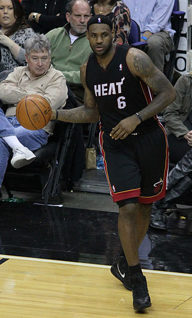

 Inför säsongen 2010–2011, den 1 juli 2010, stod det klart att LeBron James skulle bli en free agent. Efter många spekulationer gick James, efter en timmeslång intervju på ESPN den 8 juli, officiellt ut med att han valt att spela för Miami Heat. Miami Heat hade då redan skrivit nytt kontrakt med storstjärnan Dwyane Wade och värvat Chris Bosh, även han en av ligans bästa spelare, från Toronto Raptors.
Detta väckte stor ilska hos Cleveland Cavaliers, inte bara för att de förlorade ligans bästa spelare, utan även för att han gav sitt besked till Cleveland bara minuter före intervjun på ESPN. Efter att han skrivit på för Miami fick han ta emot mycket kritik av sina gamla fans och första matchen som gäst i Cleveland krävde extra säkerhetsåtgärder. Matchen blev relativt lugn och LeBron gjorde sin bästa prestation för säsongen.
LeBron avslutade säsongen med 26,7 poäng per match i snitt, som är det sämsta sedan hans rookie-säsong då hans snittade 20,9 poäng per match. Hans 26,7 poäng per match räckte ändå till en andraplats bland ligans bästa poänggörare. Vann gjorde Kevin Durant för andra året i rad. James lagkamrat Dwyane Wade blev ligans fjärde bästa poänggörare med 25,5 poäng per match. De båda gjorde 4052 poäng under säsongen, vilket är det mesta en duo någonsin gjort i Miami Heat. Miami blev näst bäst i eastern conference med 58 vinster och 24 förluster.
Bäst var Chicago Bulls som vann 60 av sina 82 matcher. Efter säsongen blev LeBron inte utnämnd till ligans mest värdefulla spelare. Priset, som LeBron vann både 2009 och 2010, fick Derrick Rose. I slutspelet tog sig Miami ända till finalen, där de mötte Dallas Mavericks med den tyske megastjärnan Dirk Nowitzki i spetsen. Dallas vann finalen med 4-2 i matcher, mycket tack vare att James endast snittade 17,8 poäng i finalspelen. Det är 8,9 poäng mindre per match än vad han snittade i grundserien.
Inför denna säsong var Miami Heatförsvarande mästare och LeBron James genomförde en av sina bästa säsonger hittills, vilket ledde till att han kammade hem sin fjärde NBA Most Valuable Player Award. I februari hade James en fantastisk månad och var den första spelaren sen Kareem Abdul-Jabbar som sköt över 200 skott och satte mer än 64 procent av dem över en kalendermånad. Detta satte starten för 27 raka vinster för Miami, som är näst flest i NBA:s historia. Miami kammade hem den första platsen i Eastern Conference och slog ut både Milwaukee Bucks samt Chicago Bulls i första och andra ronden. I den tredje ronden mötte Miami Indiana Pacers och vann i en avgörande match efter att det stod 3-3 i serien. Miami mötte Tim Duncans San Antonio Spurs i finalen, som i finalerna 2006/2007 besegrade LeBrons Cavaliers. Miami vann titeln med 4-3 i matcher, efter ett underläge med 2-3 och en dramatisk sjätte match. LeBron utsågs till NBA Finals MVP och kammade hem sin andra titel.